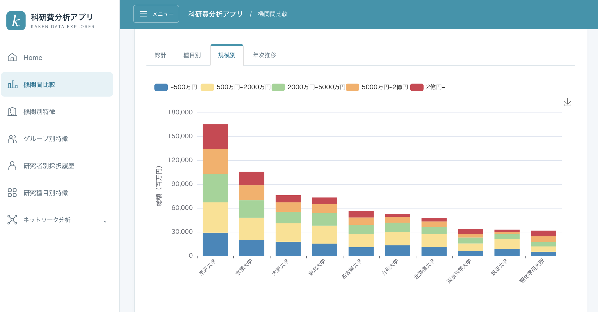
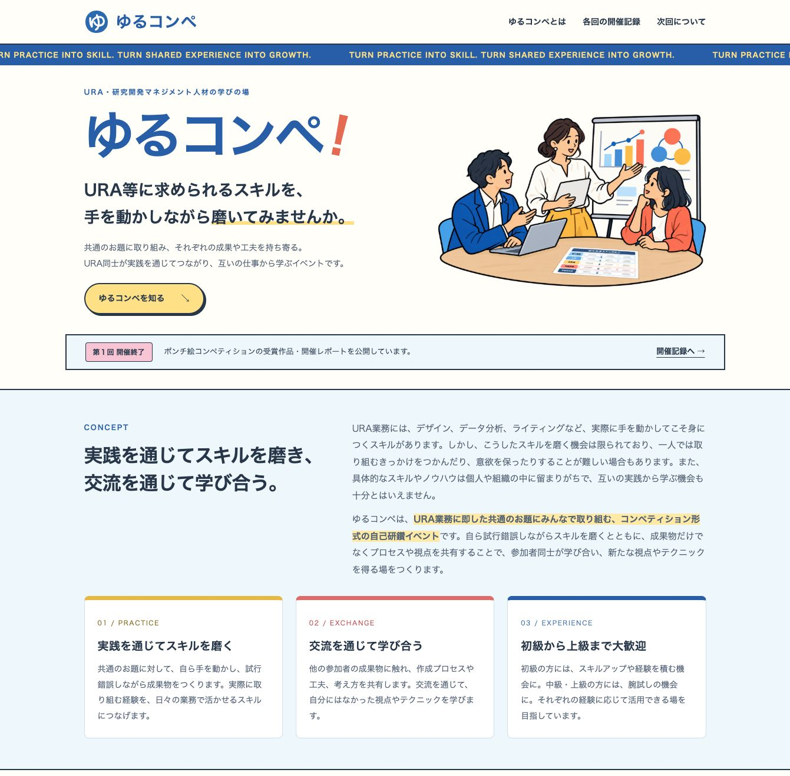

分析ツールの開発

大学等の研究活動等に関するオープンデータを用いて、IR業務に役立つ分析ツールを開発しています。一般に公開していますので、どなたでも無料で使えます。
公開ツールを見る →Takuya Kubo / 博士（学術）
信州大学 学術研究・産学官連携推進機構
准教授（特定雇用）／IRer／URA／コンペ師
大学等におけるInstitutional Research業務や分析ツールの開発に取り組むほか、
URA等の研究開発マネジメント人材の育成にも従事しています。

大学等の研究活動等に関するオープンデータを用いて、IR業務に役立つ分析ツールを開発しています。一般に公開していますので、どなたでも無料で使えます。
公開ツールを見る →
URA業務に関する共通のお題への取り組みと交流を通じて学び合うイベントを主催しています（※RA協議会スキルプログラム専門委員会の活動として実施しています）。
ゆるコンペのサイトを見る ↗